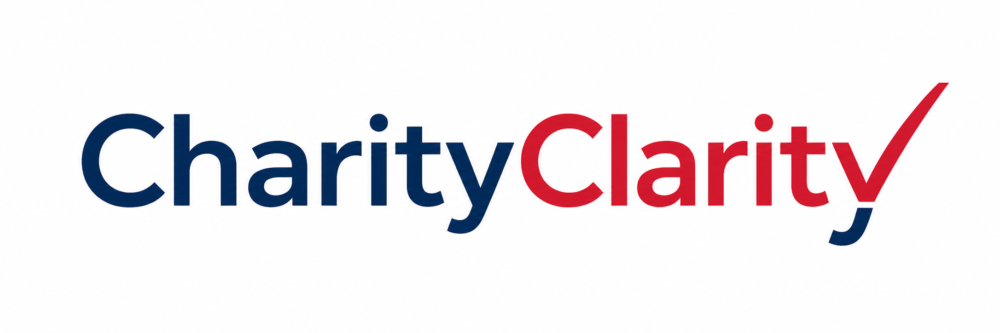

NEW YORK CONNECTOR · STAGING PROTOTYPE
Connect New York to CharityClarity
One-time setup for Chrome on Windows. Use the same Chrome profile you use for CharityClarity.
Update your existing connector in the same Chrome profile you use for CharityClarity.
Checking whether your connector is already installed…
You’re all set
No download or installation is needed. Return to CharityClarity to run your checks.
Return to CharityClarity-
Download and extract
Download and replace the old files
Download connector ZIPSave the ZIP to Downloads. Open Downloads, right-click charityclarity-ny-staging.zip, then choose Extract all → Extract.
Download the latest ZIP above. Right-click it in Downloads and choose Extract all. Extract into your existing yellow charityclarity-ny-staging folder and choose Replace the files in the destination when Windows asks.
You should now see a normal yellow folder named charityclarity-ny-staging. Opening the ZIP alone does not extract it.
-
Add the folder to Chrome
Reload the connector in Chrome
Copy this address, paste it into Chrome’s address bar, then press Enter.
Turn on Developer mode at the top right and click Load unpacked. In Downloads, select the yellow charityclarity-ny-staging folder, then click Select Folder.
Turn on Developer mode at the top right. Find CharityClarity — Staging NY Connector and click its Reload button (the circular arrow). Its version should now be 0.2.1.
Choose the extracted folder, not the ZIP file. Keep that folder on your computer while you use the connector.
-
Return and check
Open CharityClarity below and unlock staging. You should see “New York connector is ready.”
Return to CharityClarityKeep Chrome open while checks run. Setup is complete once the ready message appears.